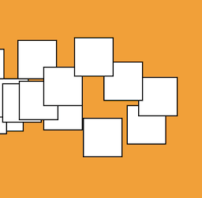
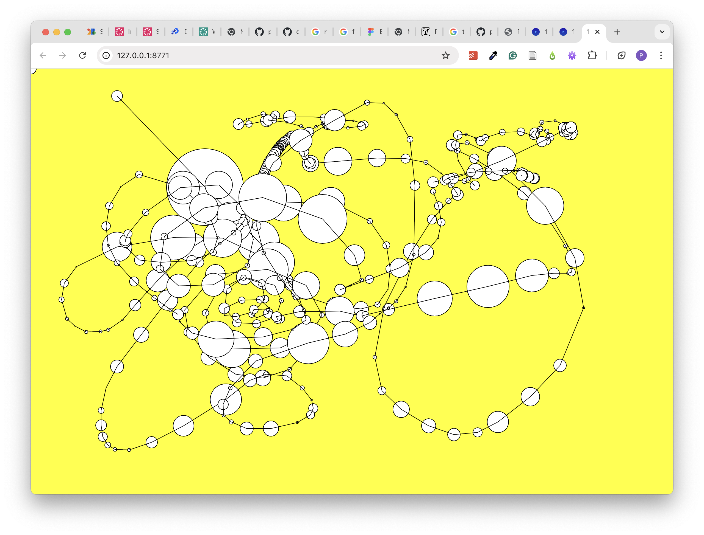
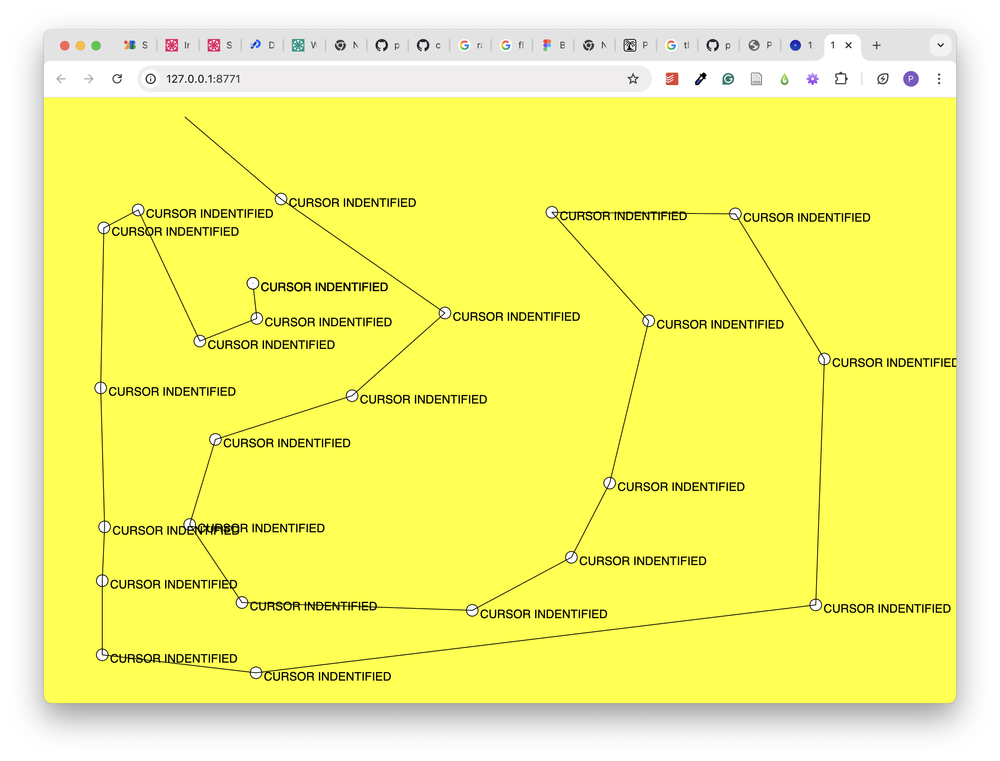
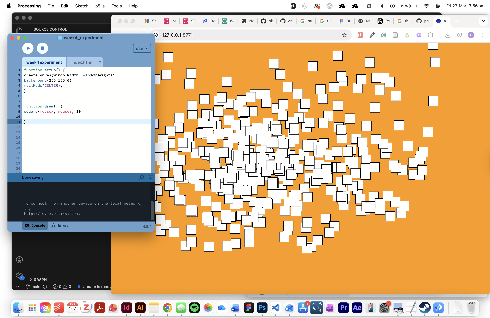

back
In this activity, we got to use a new program and learn some basic p5.js coding with 'Processing'. (yay!) I hadn't seen processing before this week, but I appreciate it - I was pretty interested to learn how it was created, then redeveloped to fit within Javascript. During this activity, I couldn't stop thinking about all the different experiments I could do with this program - It has alot of room for fun functionality and stacking of effects.
Looking at it objectively, I think it lowers the threshold of difficulty (a bit, you still have to understand the language) to produce more creative coding measures using javascript - allowing creatives to visualise their code easy within the system. Big fan.
Below are some of my favourite outcomes from our learning trial-and-error.


